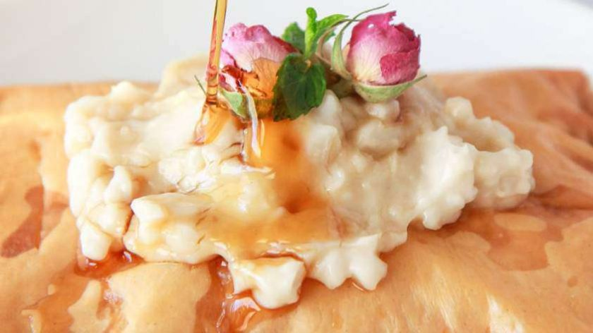
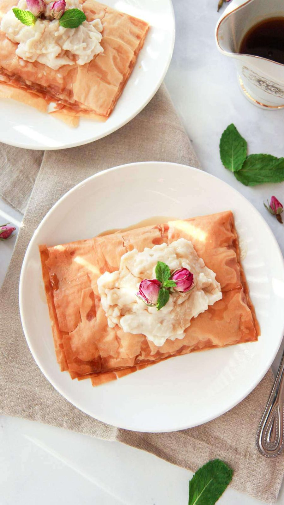
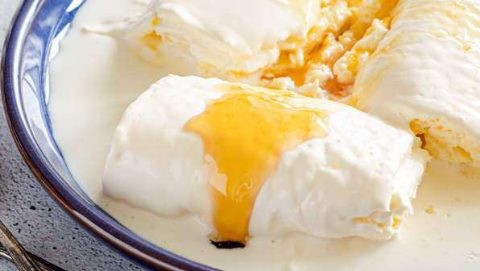
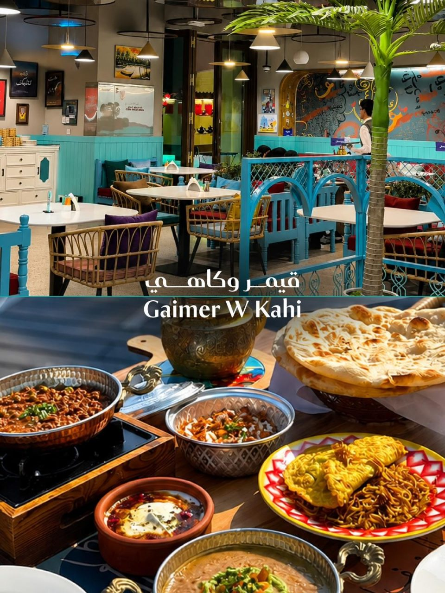
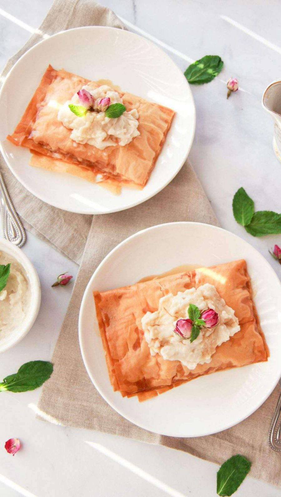
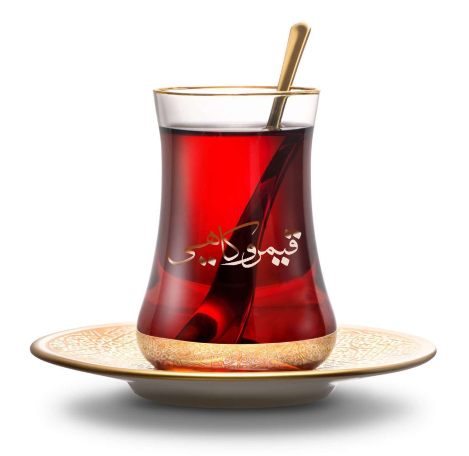
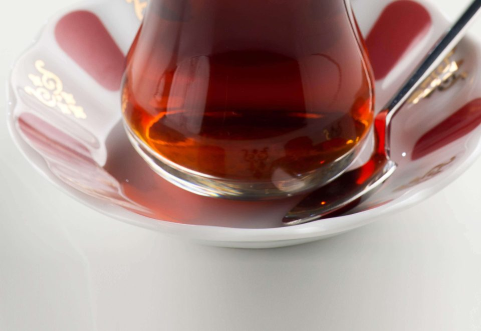
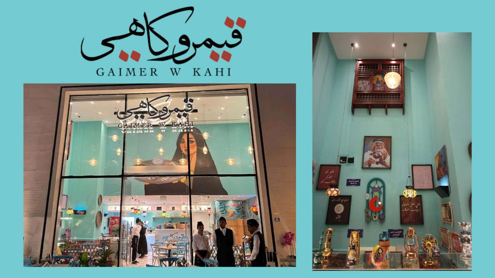

كاهي قطعة واحدة
فطيرة سادة عراقية — تكفي شخصاً إلى شخصين.
في الصورة: الكاهي مع القيمر (يُطلب معه)
35 ر.ق
مطعم خليجي عراقي · الدوحة
طبقاتٌ من العجين المورّق المسقيّ بالقطر، وعليها القيمر الثقيل — وأشهر فطور عراقي صار على مائدتين في الدوحة.


من أين جاء القيمر
القيمر يُصنع من حليب طبيعي بلا أيّ إضافات ولا مواد حافظة — حليب جواميس العراق في الأهوار وأرياف النهرين، التي ترعى عشب العراق وتشرب من دجلة والفرات. وهذا ما جعل القيمر العراقي لا نظير له، حتى صار يُسمّى «قيمر العرب».
والكاهي أشهر معجنات المطبخ العراقي: طبقٌ قديم يُطلب أمام أبواب الأفران في الصباح، وخاصّة في صباحات العيد — ويُؤكل مع القيمر.
عندنا الكاهي يجمع رِقّة الـMille-Feuille مع دفء الدونات المحلّاة، ويُقدَّم مع القيمر والدبس. وطعامنا كلّه يُطبخ بمنتجات طازجة محلّيّة وموسميّة، على أصل الطبخ العراقي.
المطبخ العراقي خلاصة إرثٍ طويل، تداخلت فيه مطابخ الجيران — إيران وسوريا وتركيا — فصارت أطباقه اليوميّة هرماً غذائيّاً كاملاً يصلح لكل فصول السنة.
من مائدتنا
الأسعار بالريال القطري، وتشمل ما هو مطبوع في منيو المطعم.

فطيرة سادة عراقية — تكفي شخصاً إلى شخصين.
في الصورة: الكاهي مع القيمر (يُطلب معه)
قيمر عراقي — يكفي شخصاً إلى شخصين.

فول مدمس، فلافل خاصّة، كبدة غنم، بيض بالجبن.

كاهي بالجبن أو كاهي بالزعتر — على اختيارك.

الشاي العراقي المخدر في الاستكان.

قوري الشاي المخدر الكبير — يُقدَّم مع سخان.
وفي المنيو 144 طبقاً — المشاوي العراقية، صواني العزايم، الحلويات والمشروبات. شاهد المنيو كاملاً
المنيو
الريوق يُقدَّم طول اليوم، والمشاوي من الساعة 12 ظهراً.
المواقع

intake/03-branch-photos/
السجلّ
هذا القسم محفوظٌ للشهادات والجوائز. ولم يُكتب فيه شيء بعد — وشهادةٌ بلا جهةٍ مانحةٍ وسنةٍ تُقرأ زخرفةً لا سجلّاً.
في انتظار الملفّات — intake/02-awards-certificates/